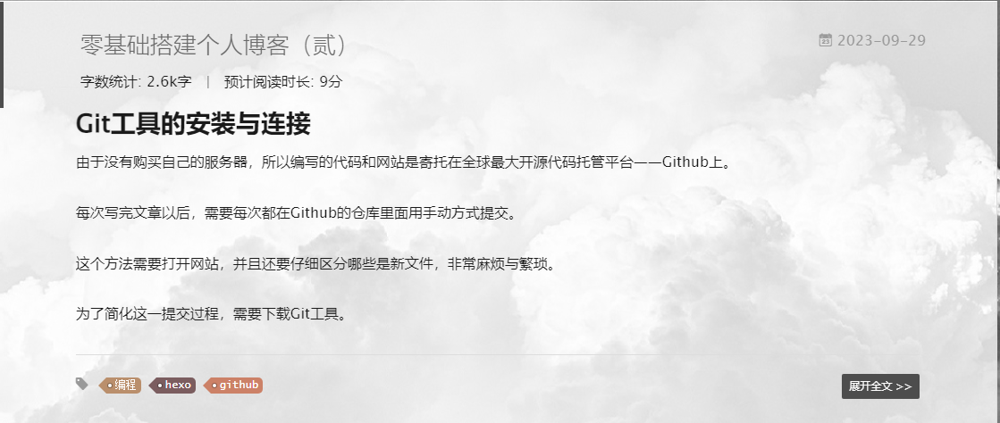
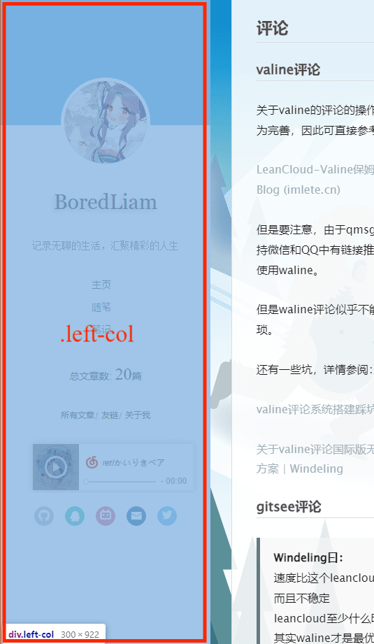
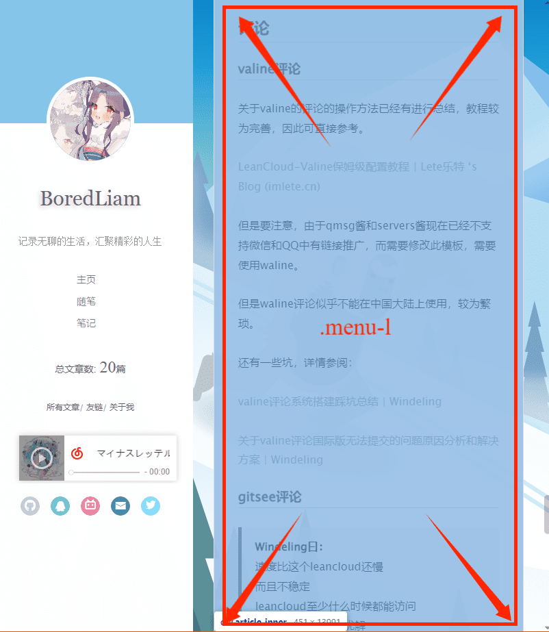

本文最后更新于 2024-09-17T13:50:15+08:00
最后更新时间2024/2/24
在经过千辛万苦之后，你终于建立起一个基本的网站并添加了属于自己的内容。那么剩余的只需添砖加瓦即可，现在就让我们将网站页面继续完善与美化吧。（当然更新之后难易顺序只能说乱七八糟，建议速览完一遍再动手）
注意：以下内容并非一网站之必要，请自行斟酌添加。
但要牢记的是：一个博客最重要的，永远是你的文章！
内容持续更新中（吧）…
2023.11.22更新：网站内容嵌入 分享至qq空间
2023.12.30更新：数学公式插入
功能
添加头像与设置网站图标
设置头像可以在themes\yilia_config.yml（记住他，后面经常用到）文件里找到此片段
1
2
3
4
5
6
7
|
baidu_analytics: ''
google_analytics: ''
favicon: /img/1favicon.ico
avatar: https://img1.imgtp.com/2023/09/29/J1adH105.JPG
|
其中favicon: /img/1favicon.ico是你的网站图标的位置及名称，我的是在\source\img下的1favicon.ico（并不需要和我一样，写对文件位置即可）
头像同理，avatar:后面接上你的文件位置即可（我的头像放在图床上，于是接的是链接，你也可以向上文一样使用\source\img的格式~）
添加一言
左侧栏头像下面其实可以添加你的名言描述的，在themes\yilia_config.yml中添加
1
2
| author: BoredLiam
subtitle: '记录无聊的生活，汇聚精彩的人生'
|
即可。
当然还可以用css添加一些效果，如：
打开themes\yilia\layout\_partial\left-col.ejs
看前两行：
1
2
3
4
5
6
7
8
9
10
11
12
13
14
15
16
17
18
19
| <% var defaultBg = '#4d4d4d'; %>
<div class="overlay"></div>
<div class="intrude-less">
<header id="header" class="inner">
<a href="/about" class="profilepic">
<img src="<%=theme.avatar%>" class="js-avatar">
</a>
<hgroup>
<h1 class="header-author">
<a href="/about"><%=theme.author%></a>
</h1>
</hgroup>
<% if (theme.subtitle){ %>
<p class="header-subtitle" style="font-family: Trebuchet MS;"><%=theme.subtitle%></p>
<%}%>
</header>
</div>
|
我们在<h1 class="header-author">标签中添加style进行添加阴影、更换字体等操作，举个例子：
1
| <h1 class="header-author" style="font-family: Georgia, 'Times New Roman', Times, serif;text-shadow: -.1em .1em .2em #ccc;font-weight: 500;">
|
效果就是我的标题这样啦！
同样，我们也可以更改p class="header-subtitle" style="font-family: Trebuchet MS;"><%=theme.subtitle%></p>来自定义一言的样式。
加入搜索引擎
可以提交站点地图以使你的网站能在搜索引擎中搜索到，具体可以参见：hexo添加sitemap功能
bing的方法类似，但站点地图推送较慢，可寻找URL提交的方法。
网站嵌入
网易云音乐
Hexo博客yilia主题添加背景音乐 （网易云音乐）
总之就是打开网易云音乐首页，然后搜索你要添加的背景音乐
复制外链播放器的代码，打开yilia\_partial文件夹下的left-col.ejs文件，复制文件内容到最下端，红线内的iframe框就是复制的外链播放器代码，如图把代码放在div框内。

修改后的后的代码例子：
1
2
3
| <div style="position:absolute; bottom:120px left:auto; width:85%">
<iframe frameborder="no" border="0" marginwidth="0" marginheight="0" width=260 height=86 src="//music.163.com/outchain/player?type=2&id=422428548&auto=0&height=66"></iframe>
</div>
|
十分简单但有用的功能，无坑，放心使用。
当然，这个嵌入功能也可以插入文章中，只需修改一点代码即可：
在<iframe ... src="//music.163.com/outchain/player?type=2&id=422428548&auto=0&height=66"></iframe>中，
?后的参数控制着这个功能的参数，以&分隔，参数功能如下
| 参数 |
作用 |
| type |
type=0/1/2 分别对应不同的播放器样式 |
| id |
你的歌单/歌曲id（在网站上获取） |
| auto |
auto=0/1，当等于1时自动播放 |
| height |
高度，输入百分数或像素 |
| width |
宽度，同上 |
注：关于某些浏览器无法自动播放的问题，请参阅：关于浏览器音乐自动播放的问题 | Windeling
当然也有第三方的插件，如MetingJS，用的是aplayer
用法就是：
引入js：
1
2
3
4
5
|
<link rel="stylesheet" href="https://cdn.jsdelivr.net/npm/aplayer/dist/APlayer.min.css">
<script src="https://cdn.jsdelivr.net/npm/aplayer/dist/APlayer.min.js"></script>
<script src="https://cdn.jsdelivr.net/npm/meting@2/dist/Meting.min.js"></script>
|
播放器代码：
1
2
3
4
| <div>
<meting-js server="netease" type="playlist" id="666375" autoplay="false" list-max-height=1200px>
</meting-js>
</div>
|
| 参数 |
作用 |
| server |
指明是网易云音乐还是 QQ 音乐 |
| type |
指明是歌单还是一首歌 |
| id |
歌单的 ID 或者歌的 ID |
| autoplay |
自动播放 |
| list-max-height |
playlist 的最大高度 |
MetingJS 是显示歌词的，可以注释掉js的第81行关闭歌词
b站视频
b站也是可以嵌入文章的，这里顺便讲了
在视频下方分享按钮中选择嵌入代码即可
得到的代码是这样的：
1
| <iframe src="//player.bilibili.com/player.html?aid=619891894&bvid=BV1y84y1d7zB&cid=1305497933&p=1" scrolling="no" border="0" frameborder="no" framespacing="0" allowfullscreen="true"> </iframe>
|
显然还可以优化优化，参考KNIFE的博客的代码
以下是他的最终版代码，修改参数等内容参考链接内容，已经十分详细了
1
2
3
| <div style="position: relative; padding: 30% 45%;">
<iframe style="position: absolute; width: 100%; height: 100%; left: 0; top: 0;" src="//www.bilibili.com/blackboard/html5mobileplayer.html这里填写你自己的" frameborder="no" scrolling="no"></iframe>
</div>
|
得出效果就是这样的：
建站运行时间
参考大佬的代码
1
2
3
4
5
6
7
8
9
10
11
12
13
14
15
16
17
18
| <div class="TIMESET">
<span id="timeDate">载入天数...</span><span id="times">载入时分秒...</span>
<script>
var now = new Date();
function createtime() {
var grt= new Date("08/16/2023 11:18:00");
now.setTime(now.getTime()+250);
days = (now - grt ) / 1000 / 60 / 60 / 24; dnum = Math.floor(days);
hours = (now - grt ) / 1000 / 60 / 60 - (24 * dnum); hnum = Math.floor(hours);
if(String(hnum).length ==1 ){hnum = "0" + hnum;} minutes = (now - grt ) / 1000 /60 - (24 * 60 * dnum) - (60 * hnum);
mnum = Math.floor(minutes); if(String(mnum).length ==1 ){mnum = "0" + mnum;}
seconds = (now - grt ) / 1000 - (24 * 60 * 60 * dnum) - (60 * 60 * hnum) - (60 * mnum);
snum = Math.round(seconds); if(String(snum).length ==1 ){snum = "0" + snum;}
document.getElementById("timeDate").innerHTML = "本站已「安全」运行 "+dnum+" 天 ";
document.getElementById("times").innerHTML = hnum + " 小时 " + mnum + " 分 " + snum + " 秒";
}
setInterval("createtime()",250);
</script>
|
在\themes\yilia\layout\_partial文件夹下找到你的footer.ejs文件，在<div id="footer-info"></div>标签内添加以上代码，也就是在如下代码后面换行并粘贴。
1
2
3
| <div class="footer-right">
<a href="http://hexo.io/" target="_blank">Hexo</a> Theme <a href="https://github.com/litten/hexo-theme-yilia" target="_blank">Yilia</a> by Litten
</div>
|
访客数量
1.使用不蒜子的方法：hexo+yilia主题的添加访问数量 | RuiDer的博客
2.使用amazingcounters的方法：Hexo yilia主题添加网站访客人数统计 | 陈浩的个人博客 (cighao.com)
为了方便的开启或者关闭访客数量统计功能，我们可以在主题的配置文件_config.yml里面添加一个变量:
当改为false时即关闭了访客统计功能。 我们在\themes\yilia\layout_partial文件夹下新建一个counter.ejs文件，并将在前面复制到的代码粘帖在这个里面。
文章设置
这里我们会讲述一些帮助你整理文章内容，提升文章阅读体验的美化内容！
配置所有文章按钮
一般你会发现点击侧边栏的所有文章按钮会显示缺失模块：

其实按照上面的步骤安装插件即可，在你的blog（博客文件夹）文件夹右键打开Git Bash，输入
1
| npm i hexo-generator-json-content --save
|
若出现add XXX packages from XXX contributors in XXXs即为成功。
接下来在博客根目录（还是刚刚的博客文件夹）的_config.yml文件下添加如下代码
1
2
3
4
5
6
7
8
9
10
11
12
13
14
15
16
17
18
| jsonContent:
meta: false
pages: false
posts:
title: true
date: true
path: true
text: false
raw: false
content: false
slug: false
updated: false
comments: false
link: false
permalink: false
excerpt: false
categories: false
tags: true
|
之后清除缓存并提交即可。
在成功后有时会出现过段时间又显示缺失插件的情况，一般刷新网页或重装插件后即可解决。
文章展开全文
我们写文章时用<!-- more -->截断文本时会发现文章下方出现了“more >>”的超链接，但是标签旁边已经有了一个“展开全文>>”了

显然下面按钮样式的展开全文正好看些，，于是我们就把蓝色的超链接去除：
打开博客文件夹下的themes\yilia\_config.yml，搜索定位到
把他注释掉：
即可

文章目录
首先我们要添加目录，还是打开配置文件themes/yilia/_config.yml，找到这一部分
1
2
3
4
5
6
7
8
9
10
|
toc: 1
toc_hide_index: true
toc_empty_wording: '目录，不存在的…'
top: 1
|
按照注释的提示将toc值更改即可。
在写文章时在头部加上toc: true就可以显示一个目录。
原来的默认的目录蓝不拉几，令人不满
于是我们还可以参考莫失莫忘Lawlite的代码，美化文章目录，具体自己看吧我懒得写咯累死我了
注：从上渐进动画的设置会导致目录不随屏幕移动的bug，谨慎使用，原因参考：【踩坑】子元素position:fixed失效问题
注2：就算不设置动画手机端的目录也会卡住，原因同上，只需要在\themes\yilia\source\main.0cf68a.css中搜索.mid-col，在其中一个后面加上overflow: auto;和height: 100vh;，(且用着吧，我也不知道有没有bug)就像这样：
1
2
3
4
| .mid-col {
overflow: auto;
height: 100vh;
}
|
注3：好好好bug这就来了，修改后footer异常，咱们只要在\themes\yilia\source\main.0cf68a.css中搜索#footer，将其中一个是position: absolute;的改成position: relative;即可
1
2
3
4
5
6
7
8
9
10
| #footer {
font-size: 12px;
font-family: Menlo, Monaco, Andale Mono, lucida console, Courier New, monospace;
text-shadow: 0 1px #fff;
position: absolute;
bottom: 30px;
opacity: .6;
width: 100%;
text-align: center
}
|
添加标签与归档
写文章时我们可以添加上标签与归档，在所有文章按钮中可以集中展示，也可以分标签分类展示。
标签与归档的添加十分简单，写文章时在头部加上如下文段即可。
1
2
| tags: Computer Network
categories: Study
|
当然Computer Network等是你的归档/标签名，假若添加多个则如下
1
2
3
4
5
6
| tags:
- Computer Network
- Programming
categories:
- Study
- Internet
|
现在就可以在所有文章里寻找对应标签的文章了！

为了集中展示某个归档/标签的内容，你可以打开themes\yilia_config.yml找到以下字段：
你可以添加你的归档以集中显示，比如：
1
2
3
4
5
| menu:
主页: /
随笔: /categories/life/
笔记: /categories/study/
|
文章浏览数量
Hexo+Yilia+github主题统计文章阅读次数
注意：使用到Leancloud的服务都会略微缓慢。
文章字数统计以及阅读时长
参见这篇文章：hexo下yilia主题添加字数统计和阅读时长功能，效果如图：

总文章数
将themes\yilia\layout_partial\left-col.ejs文件的
1
2
3
4
5
6
7
| <nav class="header-menu">
<ul>
<% for (var i in theme.menu){ %>
<li><a href="<%- url_for(theme.menu[i]) %>"><%= i %></a></li>
<%}%>
</ul>
</nav>
|
后面加上
1
2
3
| <nav>
总文章数 <%=site.posts.length%>
</nav>
|
参考链接：莫与带你解析 Hexo Yilia 高级配置
安装图片插件
如果使用绝对路径无法引用图片（即在编辑器中可以浏览，但部署后无法浏览），便需要安装图片插件。
关于yilia中写博客引入图片 - 黑质白章
注意：如果使用此方法，必须将图片放入到文件夹中才可引用，但网页URL图片不受此限制。
置顶插件
如果只要求有置顶的功能，不要求可以人为调整顺序，只要安装插件便可。
1
2
| npm uninstall hexo-generator-index --save
npm install hexo-generator-index-pin-top --save
|
如果有要求，还要配置置顶标准。
打开：\themes\yilia\layout\post.ejs直接在最前面加入以下代码即可
1
2
3
4
5
| <% if (page.top) { %>
<i class="fa fa-thumb-tack"></i>
<font color="7D26CD">置顶</font>
<span class="post-meta-divider">|</span>
<% } %>
|
然后在需要置顶的文章的Front-matter中加上top选项即可 top后面的数字越大，优先级越高
1
2
3
4
5
| ---
title: 2019
date: 2019-02-14 16:10:03
top: 5
---
|
修改根目录配置文件/_config.yml
top值为-1表示根据top值倒序（正序设置为1即可），同样date也是根据创建日期倒序。
1
2
3
4
5
6
| index_generator:
path: ''
per_page: 10
order_by:
top: -1
date: -1
|
参考文章：莫与带你解析 Hexo Yilia 高级配置
评论
valine评论
关于valine的评论的操作方法已经有进行总结，教程较为完善，因此可直接参考。
LeanCloud-Valine保姆级配置教程 | Lete乐特 ‘s Blog (imlete.cn)
但是要注意，由于qmsg酱和servers酱现在已经不支持微信和QQ中有链接推广，而需要修改此模板，需要使用waline。
但是waline评论似乎不能在中国大陆上使用，较为繁琐。
还有一些坑，详情参阅：
valine评论系统搭建踩坑总结 | Windeling
关于valine评论国际版无法提交的问题原因分析和解决方案 | Windeling
gitsee评论
Windeling曰：
速度比这个leancloud还慢
而且不稳定
leancloud至少什么时候都能访问
其实waline才是最优解
你去注册一个试试
所以他没写。
分享按钮
在文章中可以加入按钮，分享至qq空间：参考这篇文章或者这篇文章
planA：
1
2
3
4
5
6
7
8
9
10
11
12
13
14
15
16
17
18
19
20
21
22
23
24
25
26
27
28
29
30
31
32
33
34
| <input type="button" onclick="shareQQzone();" value="分享"></input>
<script src="http://qzonestyle.gtimg.cn/qzone/app/qzlike/qzopensl.js#jsdate=20111201" charset="utf-8"></script>
<script>
function shareQQzone(){
var _url = 'wenmeng.online';
var _showcount = '1'
var _desc = '我要回家，来啊';
var _summary = '有一起拼车的吗，一起拼车吧';
var _title = '平院——>火车站';
var _site = '没有显示';
var _pic = 'https://wenmeng.online/images/wm.png';
var _width= '800px';
var _height= '200px';
var _shareUrl = 'http://sns.qzone.qq.com/cgi-bin/qzshare/cgi_qzshare_onekey?';
_shareUrl += 'url=' + encodeURIComponent(_url||document.location);
_shareUrl += '&showcount=' + _showcount||0;
_shareUrl += '&desc=' + encodeURIComponent(_desc||'分享的描述');
_shareUrl += '&summary=' + encodeURIComponent(_summary||'分享摘要');
_shareUrl += '&title=' + encodeURIComponent(_title||document.title);
_shareUrl += '&site=' + encodeURIComponent(_site||'');
_shareUrl += '&pics=' + encodeURIComponent(_pic||'');
window.open(_shareUrl,'_blank','width='+_width+',height='+_height+',top='+(screen.height-_height)/2+',left='+(screen.width-_width)/2+',toolbar=no,menubar=no,scrollbars=no,resizable=1,location=no,status=0');
}
</script>
|
实际效果：
planB：
1
2
3
4
5
6
7
8
9
10
11
12
13
14
15
16
17
18
19
20
21
22
23
24
25
26
27
28
29
30
31
32
33
34
35
| <div class="shareBox">
<span class="">分享到：</span>
<span @click="shareDo('qzone','MVC前端网(menVScode)','http://www.menvscode.com/upload/41464238946737386.png')">
<img src="http://zixuephp.net/static/images/qqzoneshare.png" width="30">
</span>
<span @click="shareDo('qq','MVC前端网(menVScode)','http://www.menvscode.com/upload/41464238946737386.png')">
<img src="http://zixuephp.net/static/images/qqshare.png" width="32">
</span>
</span>
<span @click="shareDo('wechat','MVC前端网(menVScode)','http://www.menvscode.com/upload/41464238946737386.png')">
<img src="http://zixuephp.net/static/images/wechatshare.png" width="32">
</span>
</div>
<script>
function shareTo(stype,title,url) {
let shareTitle = title
let imgUrl = url
if(stype=='qzone'){
window.open('https://sns.qzone.qq.com/cgi-bin/qzshare/cgi_qzshare_onekey?url='+document.location.href+'?sharesource=qzone&title='+shareTitle+'&pics='+imgUrl+'&summary='+document.querySelector('meta[name="description"]').getAttribute('content'));
}
}
if(stype == 'qq'){
window.open('http://connect.qq.com/widget/shareqq/index.html?url='+document.location.href+'?sharesource=qzone&title='+shareTitle+'&pics='+imgUrl+'&summary='+document.querySelector('meta[name="description"]').getAttribute('content')+'&desc='+shareTitle);
}
if(stype == 'wechat'){
window.open('http://zixuephp.net/inc/qrcode_img.php?url=http://zixuephp.net/article-1.html');
}
}
export default shareTo
</script>
|
我懒得弄了，自己看文章吧(✿◡‿◡)
数学公式（失败了）
我发现部署后显示不出来，等我有时间找找bug(￣_￣|||)
（翻译：鸽了，别看了）
有时候要写一些公式怎么办呢
————那当然是插图片装插件啦
参考（zhaochao）教程
STEP1 用 Kramed 代替 hexo 自带的 Marked
git输入这堆
1
2
| npm uninstall hexo-renderer-marked --save
npm install hexo-renderer-kramed --save
|
并更改/node_modules/hexo-renderer-kramed/lib/renderer.js中以下内容
1
2
3
4
| function formatText(text) {
return text.replace(/`\$(.*?)\$`/g, '$$$$$1$$$$');
}
|
为
1
2
3
| function formatText(text) {
return text;
}
|
STEP2 抛弃hexo-math并投奔mathjax
先卸载hexo-math如果你有的话
并且下载上mathjax
1
2
| npm uninstall hexo-math --save
npm install hexo-renderer-mathjax --save
|
注意： 由于一些原因，当使用yilia-plus主题时，使用mathjax会报错，如果仍要使用mathjax，根据 yilia-plus作者 JoeyBling提供的解决方案，需要进入node_modules/hexo-renderer-mathjax文件夹执行如下代码：
1
2
3
| npm uninstall ejs -S
# 安装最新版ejs
npm i ejs@latest -S
|
STEP3 转义修改
某些字符在两家对应不同的东西会转义，我们修改一下
1
2
3
4
5
6
7
| escape: /^\\([\\`*{}\[\]()#$+\-.!_>])/,
escape: /^\\([`*\[\]()# +\-.!_>])/,
em: /^\b_((?:__|[\s\S])+?)_\b|^\*((?:\*\*|[\s\S])+?)\*(?!\*)/,
em: /^\*((?:\*\*|[\s\S])+?)\*(?!\*)/,
|
STEP4 配置mathjax
在文件node_modules\hexo-renderer-mathjax\mathjax.html中添加如下一行代码：
1
| <script id="MathJax-script" async src="https://cdn.jsdelivr.net/npm/mathjax@3/es5/tex-mml-chtml.js"></script>
|
（不是我）之前查了很多网上的 hexo 配置 Mathjax 的文章，它们在该文件中加入的代码通常是以下所示，但是这行代码仅在本地（即执行hexo s时）可以渲染 tex 数学公式，但是部署到 github 后就不能渲染 tex 数学公式了，所以强烈推荐使用第一种代码，这是Mathjax官网给出的url。
1
2
|
<script type="text/javascript" async src="cdn.mathjax.org/mathjax/latest/MathJax.js"></script>
|
最后在你使用的主题的_config.yml中添加
这里
1
2
3
4
| mathjax:
enable: true
# 是不是每页都使用mathjax
perpage: false
|
再刷新即可
效果非常的amazing啊就像这样：
输入的代码：
1
| $$\sum_{i=0}^n i^2 = \frac{(n^2+n)(2n+1)}{6}$$
|
mathjax语法
且慢！这一坨乱七八糟的我看不懂！
没事这里有语法教程，请自学：Mathjax初级语法
当然化学方程式也可以写，同样见Mathjax其他语法
也是语法链接
效果如下
古法炼金：（方程式语法学不会摆烂了用数学语法来的写的）
界面美化
404页面
直接在\source文件夹里面加一个个性的404.html，内容自定，可以到网上下载个性404界面模板。
404界面模板推荐
智能菜单的修改
友链与关于我的修改和全部文章的修改差不多，修改根目录配置文件/_config.yml中的
1
2
3
4
5
6
| friends:
A: http://XXX.com
B: http://YYY.com
aboutme: 这是一个网站。<br>♪(´▽｀)
|
其中<br>的作用就是换行，有时会出现换行失败的情况，但是刷新之后就好了。
进入动画
为了使进入博客时过渡更为柔和，我们可以自己在CSS添加动画。
如下图是left-col（侧边栏）与menu-l（文章以及后面的白色背景）的范围，我们就给他们分别加上动画


注：从上渐进动画的设置会导致目录不随屏幕移动的bug，谨慎使用
我们打开themes\yilia\source中的main.0cf68a.css，
在末尾添加
1
2
3
4
5
6
7
8
9
10
11
12
13
14
15
16
17
18
19
20
21
22
23
24
25
26
27
28
29
30
31
32
33
34
35
36
37
38
| @keyframes fadeInLeft {
from {
opacity: 0;
transform: translate3d(-100%, 0, 0);
}
to {
opacity: 1;
transform: none;
}
}
.left-col{
animation-duration: 1s;
animation-fill-mode: both;
animation-name: fadeInLeft;
animation-delay: 0s;
}
|
这样就可以实现简单的动画啦，假如你还想添加更多动画，可以尝试看看CSS动画或者使用动画库
侧边栏背景修改
刚刚就讲到侧边栏的位置，我们还是打开themes\yilia\source中的main.0cf68a.css并找到.left-col
加入以下内容
1
2
3
4
5
6
7
8
9
10
| .left-col {
width: 300px;
position: fixed;
opacity: 1;
transition: all .2s ease-in;
height: 100%;
z-index: 999;
position: fixed;
background-image: url(img/<你的背景图片名>);
}
|
在\source\img中放下你的背景文件即可
文章背景修改
参照这篇文章：关于yilia背景图片畸变问题及恒定显示解决方案 | Windeling
背景色块与滑块调整
头像上面的色块与所有文章的滑块也是可以调整颜色的，修改为一个切合你的背景的颜色会大大提高美感。
还还还是打开themes\yilia_config.yml
1
2
3
4
5
6
| # 样式定制 - 一般不需要修改，除非有很强的定制欲望…
style:
# 头像上面的背景颜色
header: '#86C5EA'
# 右滑板块背景
slider: 'linear-gradient(200deg,#ccc,rgb(87, 87, 87))'
|
header: ''以及slider: ''里面可以添加你自己喜欢的颜色
1
| linear-gradient(<degree>deg,<color1>,<color2>)
|
这一段是添加一个渐变轴为<degree>度的从<color1>到<color2>的渐变，具体写法请参见CSS中的linear-gradient()
最终效果
加油！（瘫
不知道啥时候更新，还得上学